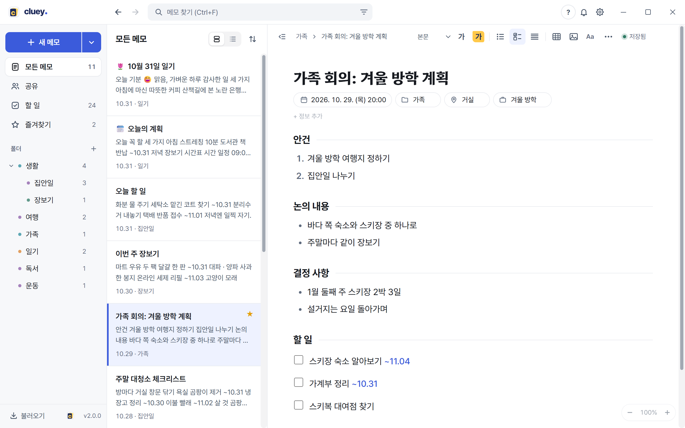
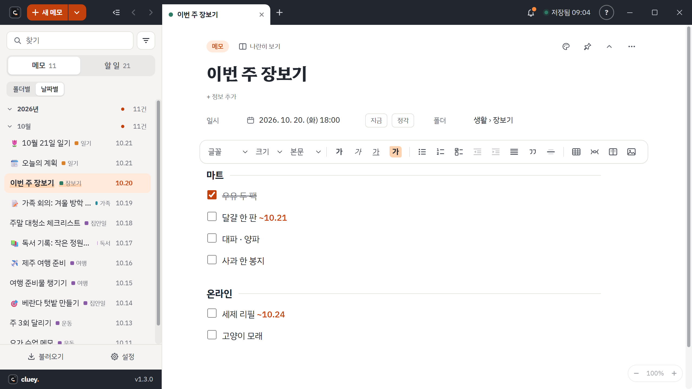
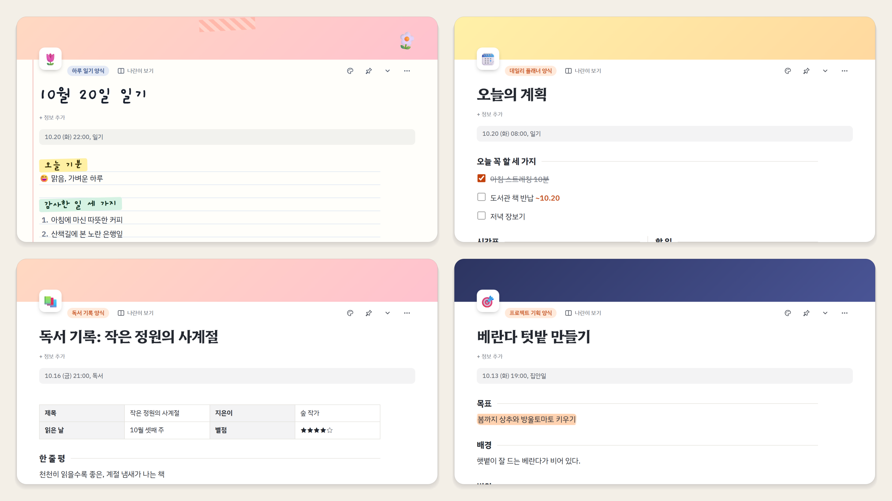

윈도우용 무료 메모 프로그램
Clue + Key = Cluey
흩어진 생각의 단서가 모여,
해답의 열쇠가 되는 공간
문득 떠오른 아이디어, 회의 중에 끄적인 메모, 오늘의 일기. 형식 없이 툭툭 던져 두면, 차곡차곡 쌓여 일과 생활을 푸는 열쇠가 됩니다.
무료 · Windows 10 / 11 · 인터넷 없이 바로 켜집니다
이름에 담은 뜻
- Clue · 단서
- 문득 떠오른 아이디어, 회의 중에 끄적인 메모, 오늘의 일기. 형식 없이 툭툭 던져 두세요.
- Key · 열쇠
- 차곡차곡 쌓이고 이어진 단서는 일과 생활을 푸는 명확한 열쇠가 됩니다.
- -y · 가벼움
- 무거운 문서 프로그램이 아니라, 매일 켜서 가볍게 적는 나만의 비밀 노트.
메모장처럼 가볍게, 업무 수첩처럼 단단하게
켜자마자 쓰고, 필요한 것만 꺼내 봅니다.
회의록 · 주간업무 같은 양식으로 시작하고, 내 양식도 만들어 묶음으로 정리합니다.
쓰는 법 보기할 일과 기한메모 속 할 일이 한곳에 모이고, 달력 단추로 기한을 정합니다.
쓰는 법 보기스티커 메모자주 보는 메모를 바탕화면에 붙여 둡니다. 항상 위에 둘 수도 있습니다.
쓰는 법 보기표 · 마인드맵 · 단 나누기정리할 땐 표, 생각을 펼칠 땐 마인드맵, 나란히 적을 땐 2단 · 3단.
쓰는 법 보기빠른 검색제목 · 본문 · 장소 · 참석자까지 낱말 몇 개나 초성만으로 찾습니다.
쓰는 법 보기메모 잠금메모마다 비밀번호. 잠긴 메모는 Cluey 운영자도 볼 수 없습니다.
쓰는 법 보기기능 전체 보기 · 사용 팁 · 다른 메모 프로그램과 비교

꾸미는 재미까지
종이 바탕, 색 띠와 아이콘, 손글씨 제목과 마스킹 테이프. 어떤 메모든 고를 수 있습니다.

1.2 새 기능
혼자 쓰다가, 같이 씁니다
구글로 로그인하면 메모가 Cluey 서버에 안전하게 보관되고, 여러 PC 와 동료에게 이어집니다. 로그인하지 않아도 PC 안의 기능은 모두 쓸 수 있습니다.
회사 PC 에서 쓰던 메모를 집 노트북에서 그대로. 동시에 고쳐도 아무것도 잃지 않습니다.
자세히 보기공유 폴더폴더를 친구에게 나눠 줍니다. 사람마다 보기만 · 고치기를 정하고, 누가 고치는 중인지도 보입니다.
자세히 보기AI 도구 연결Claude 같은 AI 에게 "지난주 회의 메모 정리해 줘". 내 PC 안에서만 열리고 잠긴 메모는 보이지 않습니다.
자세히 보기API 키내가 만든 키로 다른 프로그램이 메모를 가져가거나 남깁니다. 볼 폴더 · 기한을 정하고 언제든 끊습니다.
자세히 보기내 메모는 내 것
로그인하지 않으면 메모는 이 PC 안에만 있습니다. 로그인하면 Cluey 서버에 보관하고, 운영자는 문의 · 보안 사고 · 법적 요청이 있을 때만 기록을 남기고 봅니다. 잠긴 메모는 서버에도 암호화된 채로 있어서 운영자도 열 수 없습니다.
광고는 없습니다. 로그인한 경우에만 기능 사용 횟수 같은 숫자 통계(내용 없음)를 모읍니다.
새 소식
- 1.3.0꾸미기(종이 바탕 · 표지 · 아이콘 · 다이어리 글씨 · 테이프 · 스티커) · 새 양식 11가지와 종류별 고르기 · 그림 왼쪽 · 가운데 · 오른쪽 옮기기 · 종에서 보는 새 소식.
- 1.2.1구글 로그인이 '계정을 연결하는 중' 에서 멈추던 것을 고쳤습니다. 설치되지 않은 AI 도구가 '연결됨' 으로 뜨던 것을 고치고, AI 연결에 [연결 끊기] 단추를 넣었습니다.
- 1.2.0AI 도구 연결 · 구글 계정과 Cluey 서버 동기화 · 공유 폴더 · API 키 · 앱 안 공지. 구글 드라이브에 있던 메모는 저절로 옮겨집니다.
- 1.1.4켤 때 빈 메모 정리 · 메모 안 2단 · 3단 나누기 · 탭 메뉴 '모든 탭 닫기' · 윈도우 시작할 때 자동 실행.
- 1.1.3탭이 많아도 제목 줄을 끌 자리가 남게 했고, 바로가기 아이콘이 예전 로고로 보이던 것을 고쳤습니다.
생각이 막힐 땐, 클루이를 켜세요.
설치하거나 처음 켤 때 막히면
- "Windows의 PC 보호" 창이 뜰 때
- 추가 정보 → 실행 을 누르세요.
- "애플리케이션 제어 정책에서 이 파일을 차단했습니다" 가 뜰 때
- Windows 보안 → 앱 및 브라우저 컨트롤 → 스마트 앱 컨트롤 을 끄기 로 바꾼 뒤 다시 실행하세요. 스마트 앱 컨트롤은 한 번 끄면 윈도우를 새로 설치하기 전에는 다시 켤 수 없습니다. 괜찮을 때만 끄세요.
개인이 만든 무료 프로그램이라 코드 서명 인증서가 없어서 윈도우가 확인을 한 번 더 받습니다. 한 번 설치하면 새 버전은 저절로 받아 둡니다. 더 궁금한 것은 자주 묻는 질문에 있습니다.